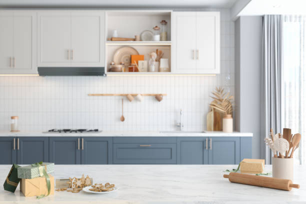

Lima Pennsylvania
info@ohmykitchen.pro
Lima Pennsylvania
info@ohmykitchen.pro

Discover elegant countertops in Lima Pennsylvania that combine style and functionality. Perfect for kitchens and bathrooms. Trust our skilled team for flawless installations and long-lasting quality.
Click Here To Call Us (877) 848-1711Transform your home or business with the finest countertop services in Lima Pennsylvania . At our company, we specialize in delivering high-quality countertops that blend elegance, functionality, and durability. Whether you’re renovating your kitchen, bathroom, or commercial space, our expert team offers tailored solutions to meet your unique needs.
We provide a wide selection of materials, including granite, quartz, marble, and laminate countertops. Each material is meticulously sourced to ensure exceptional quality and lasting beauty. Our skilled craftsmen focus on precise measurements and seamless installations, ensuring a perfect fit for every project. With years of experience, we pride ourselves on combining top-notch craftsmanship with unparalleled customer satisfaction.
Why choose us? We stand out in Lima Pennsylvania for offering competitive pricing, fast turnaround times, and personalized consultations to bring your vision to life. From choosing the ideal material to the final installation, our team guides you every step of the way.
Upgrade your space with countertops that elevate both aesthetics and functionality. Contact us today to schedule a consultation in Lima Pennsylvania and discover why homeowners and businesses trust us for their countertop needs. Let us create a stunning centerpiece for your home or office that you’ll enjoy for years to come.
Residential & commercial Countertops
Quality services at affordable prices
Immediate 24/ 7 emergency services


Choosing the right countertop for your kitchen or bathroom in Lima Pennsylvania is a crucial decision that affects both the functionality and aesthetic of your space. With a wide variety of materials available, it's essential to understand your options to make an informed choice.
Consider Durability and Maintenance: For high-traffic areas like kitchens, granite and quartz countertops are popular due to their durability and low-maintenance qualities. If you're looking for something more eco-friendly, consider recycled materials or bamboo. For bathrooms, materials like marble or engineered stone provide both elegance and resilience to moisture.
Aesthetic Appeal: Your countertop should complement the overall design of your kitchen or bathroom. Light-colored granite or quartz can brighten up a space, while dark tones offer a sleek, modern look. Be sure to consider your cabinet and flooring choices to create a cohesive design that enhances your home's style.
Budget and Installation: The cost of materials can vary widely, so understanding your budget is key. While natural stone may be more expensive, engineered options like laminate or solid surface countertops can offer a more affordable alternative. Be sure to also factor in installation costs when budgeting for your countertop.
Consult a Professional: Choosing the right countertop requires careful thought and expertise. For the best results in Lima Pennsylvania consult with a local professional who can help you select and install the perfect countertop for your kitchen or bathroom needs.
Residential & commercial Countertops
Quality services at affordable prices
Immediate 24/ 7 emergency services
Creating a stylish home bar starts with selecting the perfect countertop that reflects your personal style and enhances your entertaining space. Our countertops for home bars are tailored to meet both functionality and aesthetics, ensuring you have a durable and attractive surface for mixing drinks and hosting guests.
From sleek modern designs to rustic wood options, the right countertop can set the tone for your home bar. Our experienced team assists you in choosing the right material, style, and size, crafting a space that aligns with your vision while maximizing usability.
You should choose us for your home bar countertops because we specialize in custom solutions tailored to your needs. Our dedication to quality craftsmanship and exceptional service means that you’ll receive a product that not only looks great but also enhances your entertaining experience.

As sustainability becomes a priority for homeowners, eco-friendly countertop solutions are in high demand. Our eco-friendly countertop options in Lima Pennsylvania include materials that are sustainable, recycled, or rapidly renewable, ensuring you make a positive impact on the environment while enhancing your home.
We offer a range of options, from recycled glass to bamboo and reclaimed wood, allowing you to choose a countertop that mirrors your commitment to sustainability. Our team is knowledgeable about the various eco-friendly materials available and can help you select the perfect solution that meets your design preferences.
Why choose us? Our focus on sustainable practices and environmentally responsible products sets us apart in the Lima Pennsylvania area. With a commitment to quality and customer satisfaction, we provide beautiful, eco-friendly countertops that align with your values and aesthetic goals.
When only the best will do, look to our luxury countertop installation service in Lima Pennsylvania . We specialize in high-end materials, including exquisite granite, luxurious marble, and stunning quartzite. Our commitment to quality and craftsmanship ensures that your luxury countertops will not only enhance the beauty of your home but will also serve as a long-lasting investment.
Choosing us guarantees your luxury countertop project receives the attention and expertise it deserves. We work closely with you to select materials that reflect your style and complement your space, ensuring every aspect of the installation is handled with precision. Our team of skilled artisans has extensive experience with high-end materials, providing flawless finishes that will leave you in awe. Elevate your home with our luxury countertop installations where elegance meets expertise.

In the fast-paced environment of a commercial kitchen, having reliable and durable countertops is essential. Our commercial kitchen countertop installation service focuses on providing high-performance surfaces that can withstand the demands of daily use. From restaurants to cafés, we understand the unique requirements of commercial kitchens and offer solutions that fit those needs perfectly.
What makes us the preferred choice for commercial countertop installation? Our extensive experience in the industry allows us to recommend the best materials suited for commercial kitchens, including stainless steel, quartz, and more. We prioritize durability, safety, and compliance with food service standards, ensuring your countertops meet practical requirements while looking great. Trust us to deliver high-quality commercial kitchen countertops that enhance your business operations.

First impressions matter, and retail store countertops play a crucial role in creating a welcoming environment for customers. Our retail store countertop installation service specializes in designing and installing striking countertops that reflect your brand and attract customers. From sleek designs to unique finishes, our options are tailored to fit the overall aesthetic of your store.
Choosing our services means you work with experts who understand retail dynamics. We’ll consult with you to find the right materials that align with your branding while ensuring durability and ease of maintenance. Our professional installation guarantees a seamless look that enhances your retail space. Impress your customers and boost your brand’s image with our retail store countertop services .
The hospitality industry demands elegance and durability, and our hotel and restaurant countertop solutions provide the perfect combination of both. We understand that the countertops in these environments need to make a lasting impression while also standing up to daily wear and tear.
Our team specializes in a range of high-quality materials tailored to suit restaurants, bars, and hotel lobbies. From sophisticated granite and marble to resilient solid surface options, we have the expertise to install countertops that align with your brand’s aesthetic and functional needs.
We work closely with architects and designers to create customized solutions that enhance the overall ambiance of your space. Our meticulous installation process ensures that your countertops are not only visually stunning but also meet the operational demands of a busy environment.
Invest in our hotel and restaurant countertop solutions for a sophisticated and functional space that leaves a lasting impression on your guests. Experience our commitment to quality and customer service firsthand.

Create a professional and inviting workspace with our office countertop installation services . Countertops in office environments play a crucial role in functionality and aesthetics, which is why our team focuses on providing high-quality materials designed to enhance your office's appearance and usability.
We offer a variety of materials, including laminate, quartz, and solid surface options, ensuring that every surface is not just beautiful but also suited for daily use. Our expert team collaborates with you to design and install countertops that reflect your corporate identity while maximizing workspace efficiency.
Whether you need reception desks, meeting room tables, or break room surfaces, we provide tailored solutions that meet your specific requirements. We ensure a smooth installation process with minimal disruption to your daily operations, so you can focus on what you do best.
When you choose our office countertop installation, you’re investing in a professional image that fosters productivity and impresses clients. Trust us to deliver exceptional results that enhance your workspace.

In demanding environments like medical facilities and laboratories, hygiene and durability are key components to consider for countertops. Our specialized countertop services for medical and laboratory settings in Lima Pennsylvania cater to those critical needs.
Why choose our services? We understand the stringent requirements of medical and lab environments, offering materials that are easy to clean, resistant to chemicals, and built to last. Our experienced team ensures proper installation, meeting all health and safety regulations. We work closely with facility managers to provide customized solutions tailored to their unique space. Trust us to deliver countertops that are safe, efficient, and suitable for even the most sensitive environments!
Years Experience
Expert Technicians
Satisfied Clients
Compleate Projects
When it comes to choosing the perfect countertops for your home or business in Lima Pennsylvania ohmy kitchen stands out as the trusted leader. With years of experience and a passion for quality craftsmanship, we specialize in providing a wide variety of countertops to fit every style and budget. Whether you’re remodeling your kitchen or upgrading your bathroom, our team offers expert guidance and top-tier products that transform spaces.
Our extensive selection includes granite, quartz, marble, and more, each handpicked for durability, beauty, and functionality. At ohmy kitchen, we understand that your countertops are an investment, which is why we offer only the best materials designed to last for years while maintaining their stunning appearance.
Why settle for less when you can have the best? Our team is committed to providing personalized services, ensuring that every project reflects your unique preferences and needs. We handle every detail from design to installation, guaranteeing a seamless experience. Whether you're renovating your kitchen or bathroom, our knowledgeable experts will help you select the perfect countertop to match your vision.
ohmy kitchen offers competitive pricing, exceptional customer service, and timely delivery. We pride ourselves on creating long-lasting relationships with our customers in Lima Pennsylvania . Choose ohmy kitchen today, and let us turn your countertop dreams into reality!
When it comes to durability and timeless beauty, granite countertops stand unmatched. Granite is a natural stone that not only enhances the aesthetic appeal of your kitchen or bathroom but also ensures longevity and resilience against wear and tear. In Lima Pennsylvania our granite countertop installation service provides a seamless blend of functionality and style, making it a top choice for homeowners looking to elevate their spaces.
Choosing our services means partnering with experts who have extensive experience in granite countertop installation. Our team understands the nuances of working with natural stone, ensuring precision in every cut and placement. We source high-quality granite slabs from trusted suppliers to guarantee that you receive only the best material for your home. Each installation is customized to fit your unique kitchen or bathroom layout, reflecting your personal style and preferences.
Moreover, our commitment to customer satisfaction ensures that we guide you through the entire process, from selecting the right granite to the final installation. With us, you not only get a beautiful granite countertop but also a reliable and stress-free experience.
Embrace modern sophistication with our quartz countertop installation services . Known for their engineered strength and versatility, quartz countertops come in a vast range of colors and finishes, offering homeowners endless design possibilities. Unlike natural stones, quartz is non-porous, making it resistant to stains, scratches, and bacteria, thus ideal for busy kitchens and bathrooms.
By choosing our quartz countertop installation, you benefit from our skilled craftsmanship and attention to detail. Our team specializes in custom installations, ensuring your countertops fit perfectly within your space. We take pride in selecting the finest quartz materials, sourced from reputable manufacturers, guaranteeing exceptional quality and durability.
We know that every home is unique. That’s why we work closely with you to create a customized experience, tailored to your vision and needs. Our customer service is unparalleled – we’re here to answer your questions and provide guidance throughout the installation process. Experience luxury and functionality with our quartz countertops, designed to enhance your home’s aesthetics and increase its value.
For those who desire a touch of luxury, marble countertops are the ultimate choice. Renowned for their beauty and sophistication, marble surfaces can elevate any kitchen or bathroom design. Our marble countertop installation services cater to those who appreciate the finer things in life. Each marble slab is unique, providing a one-of-a-kind aesthetic that can’t be replicated.
Why partner with us for your marble countertop project? Our skilled craftsmen understand the intricacies involved in marble installation. We utilize advanced techniques to ensure your countertops are not only beautiful but also durable. We’re dedicated to providing exceptional service, with consultations that help you choose the right type of marble suited for your needs. With our guidance, your home will exude elegance and style—let us help you create unforgettable spaces with our exquisite marble countertops!
If you’re looking to add warmth and functionality to your kitchen, our butcher block countertop installation service in Lima Pennsylvania is the perfect choice. Butcher block countertops offer a rustic charm, blending form and function seamlessly. Made from layers of wood, these countertops are not only beautiful but also practical for food preparation and cooking.
Our team specializes in butcher block installations, guaranteeing that your countertops are crafted with the finest woods available, such as maple, walnut, or cherry. We understand the importance of selecting the right wood grains and finishes, which is why we involve you in every step of the process.
Beyond aesthetics, our butcher block countertops are designed for durability and ease of maintenance. We guide you on how to care for your wooden surfaces, ensuring they remain stunning for years to come. When you choose us, you’re not just choosing a countertop; you’re making an investment in quality and craftsmanship that will enhance your kitchen for years to come.
Laminate countertops are an excellent choice for budget-conscious homeowners looking for style without compromising on functionality. Available in an extensive range of colors and patterns, our laminate countertop installation services can simulate the look of more expensive materials without the associated costs.
Why choose our laminate countertop services? We focus on delivering high-quality materials along with a professional installation experience. Our team is well-versed in current laminate technology and design trends, ensuring your countertops are both stylish and up to date. Additionally, we provide maintenance advice to ensure your countertops maintain their beauty over time. Trust us to transform your space affordably with stunning laminate countertops!
Solid surface countertops are an innovative option for those seeking a blend of durability, versatility, and design flexibility. Our solid surface countertop installation service offers customizable solutions that can fit seamlessly into any kitchen or bathroom. Known for their non-porous nature, solid surface countertops are easy to clean and resist stains, making them a practical choice for busy households.
Why partner with us? Our experienced team provides in-depth consultation services to help you choose the ideal solid surface material and design that complements your space. We pride ourselves on our attention to detail and the high-quality finishes we provide. From intricate edge designs to seamless installations, our solid surface countertops will enhance your property’s aesthetic while offering exceptional functionality. Experience the endless possibilities of solid surface counters with our expert installation services.
For a modern and industrial-chic addition to your home, consider our concrete countertop installation service in Lima Pennsylvania . Concrete countertops are becoming increasingly popular due to their unique aesthetic, versatility, and strength. They can be customized to any shape, color, or design, making them an ideal choice for creative homeowners and business owners looking to make a statement.
What can you expect from us? Our team of concrete experts is skilled in crafting and installing concrete countertops that meet the highest standards of quality. We take the time to understand your vision to create a bespoke product that speaks to your style and functionality needs. Whether you desire a rustic appeal or a sleek modern look, our concrete countertops can be transformed to fit your desired aesthetic. Trust our skilled professionals to bring your vision to life with our concrete countertop installation services .
For environmentally conscious homeowners, recycled glass countertops offer a unique blend of sustainability and style. With sparkling aesthetics and a commitment to eco-friendliness, these countertops can transform any space into a modern masterpiece. Our recycled glass countertop installation services are designed to provide a stunning, sustainable solution for your kitchen or bathroom.
Why choose our services? We specialize in high-quality recycled glass products that are both durable and visually appealing. Our team is dedicated to providing professional installation, ensuring that your new countertops are both functional and beautiful. Plus, we can guide you on the best design choices that complement your existing décor while showcasing your commitment to sustainability. Experience the perfect harmony of style and sensitivity to the environment with our stunning recycled glass countertops!
At the heart of any great kitchen or bathroom is a stunning countertop that reflects your personal style. Our custom countertop design and fabrication services in Lima Pennsylvania allow homeowners to transform their dream design into reality. Whether you prefer granite, quartz, marble, or any other material, we help craft countertops that are uniquely yours.
Our process begins with a consultation to understand your vision and requirements. Our design specialists work with you to create unique solutions that blend functionality and aesthetics seamlessly. From concept to reality, our skilled fabricators handle every aspect, ensuring attention to detail and a perfect match to your design.
Choosing us for your custom countertop needs means opting for a dedicated partner in your design journey. Our reputation is built on our commitment to craftsmanship and client satisfaction. We utilize state-of-the-art technology and skilled artisans to deliver products that exceed expectations.
If your current countertops are showing signs of wear and tear or simply no longer match your style, our countertop replacement services are here to help. Upgrading your countertops can significantly enhance the look and functionality of your kitchen or bathroom, increasing your home's value in the process.
Our replacement process begins with a thorough assessment of your existing countertops. We work closely with you to choose the perfect new material, taking into consideration aesthetics, durability, and budget. From granite to laminate, we have a wide selection of high-quality materials available to suit every homeowner's style and preference.
Our experienced installers ensure a smooth removal of your old countertops and a seamless installation of your new ones. We pride ourselves on our attention to detail and commitment to customer satisfaction. Once your replacement is complete, we provide care and maintenance tips to help keep your new countertops looking beautiful for years to come. Trust us to transform your space with stunning new countertops that reflect your taste and enhance your home’s overall appeal.
Create the outdoor oasis of your dreams with our outdoor kitchen countertop installation services . Perfect for entertaining guests or enjoying family cookouts, outdoor countertops must withstand the elements while providing a stylish addition to your landscape.
Why are we the best choice for your outdoor kitchen? We specialize in materials designed for outdoor use, ensuring durability against weathering and wear. Our team can help you choose the right surface that matches your style and functional needs. We take pride in our installation expertise, guaranteeing a seamless and beautiful outdoor kitchen that becomes the center of social gatherings. Let us transform your outdoor space with stunning countertops that perfectly blend function and aesthetics!
Kitchen islands have become a central hub in modern homes, serving as multifunctional spaces for cooking, dining, and entertaining. Our kitchen island countertop installation services transform this essential area into a stylish and functional masterpiece. We offer a range of materials and designs tailored to suit your needs and preferences.
From expansive granite surfaces to sleek quartz options, we provide kitchen island countertops that not only enhance your kitchen's functionality but also add value to your home. Our professional team collaborates with you to create a design that fits seamlessly into your existing decor while maximizing space efficiency.
Choosing us for your kitchen island countertop project ensures that you receive personalized service and quality craftsmanship. We pride ourselves on using the best materials and techniques, ensuring a durable finish that will stand the test of time, elevating the heart of your home.
Your bathroom deserves stylish and practical countertops that enhance the overall experience. Our bathroom countertop installation service in Lima Pennsylvania specializes in providing a range of materials that fit every style and budget. Whether you prefer granite's durability, quartz's low maintenance, or luxury marble, we have options to meet your aesthetic desires and functional needs.
Choosing our services guarantees that you receive top-notch customer care and expert craftsmanship tailored to your bathroom’s specifics. We guide you through the selection process, ensuring you understand your options. Our skilled installers work meticulously to provide a flawless finish that adds elegance and functionality to your bathroom. Upgrade your space with our beautiful bathroom countertop installation services .
The edge design of your countertops can significantly impact the overall look and feel of your space. Our countertop edge design and customization services in Lima Pennsylvania provide you with the opportunity to choose from a variety of edge styles that suit your taste.
Why choose us for your edge design? Our skilled team offers a wide range of customization options, from classic straight edges to more elaborate profiles like bullnose or waterfall designs. We understand that the finishing touches matter, and we pay close attention to detail to ensure your countertops look flawless. Whether you prefer a modern aesthetic or a traditional design, we can help you achieve your desired look while maintaining the highest quality. Let us assist you in creating unique and stunning edges that enhance your countertops!
If your countertops are showing signs of wear and tear, countertop resurfacing can breathe new life into them. Our countertop resurfacing service in Lima Pennsylvania is a cost-effective way to renew the look of your existing surfaces without the need for costly replacements. We specialize in applying high-quality resurfacing materials that can restore the beauty and function of your countertops.
Our team of professionals uses advanced techniques and top-notch materials to ensure that your newly resurfaced countertops not only look great but are also durable and resistant to everyday wear. We offer a wide range of colors and finishes, allowing you to customize your countertops according to your style. With our countertop resurfacing in Lima Pennsylvania you’ll experience a transformation that meets your needs and exceeds your expectations.
Accidents happen, but that shouldn’t mean that your countertops are permanently damaged. Our countertop repair and restoration service specializes in fixing a range of issues, from scratches and cracks to stains and more. We understand how important countertops are to your lifestyle, and our goal is to restore them to their original beauty and functionality.
What makes us different? Our experienced technicians use specialized techniques and high-quality products that guarantee effective restoration results. We assess the damage and devise a customized repair plan tailored to the material of your countertops. Whether you have granite, quartz, or butcher block, we have the expertise to restore their beauty. Trust our countertop repair services to bring your surfaces back to life.
Protecting your stone countertops is essential to maintaining their beauty and longevity. Our sealing and maintenance service ensures your stone surfaces—whether granite, marble, or quartz—are shielded against stains, spills, and everyday wear. We use high-quality sealants that penetrate deep into the stone, providing long-lasting protection while enhancing its natural beauty.
Why partner with us? Our experts are thorough in their evaluation of your countertops, and we provide professional sealing that allows you to enjoy your surfaces worry-free. Additionally, we offer ongoing maintenance plans to ensure your countertops remain in pristine condition over their lifespan. Count on us for sealing and maintenance that will keep your stone countertops beautiful and functional for years to come in Lima Pennsylvania .
When it comes to selecting the ideal countertop material for your home or business in Lima Pennsylvania granite, quartz, and marble stand out as top choices. These materials not only add elegance to any space but also provide exceptional durability and functionality.
Granite Countertops are known for their rugged strength and heat resistance, making them perfect for high-traffic kitchens or bathrooms. With unique patterns and colors, granite adds a natural charm that enhances the aesthetics of your home. It's also highly scratch-resistant, making it ideal for busy areas in Lima Pennsylvania .
Quartz Countertops offer a low-maintenance alternative, combining beauty and practicality. Engineered from natural quartz stone and resin, they are incredibly durable, resistant to stains, and non-porous, making them easy to clean. Quartz countertops are also available in a wide range of colors and patterns, providing endless design possibilities for your Lima Pennsylvania home.
Marble Countertops are synonymous with luxury and timeless beauty. Known for their elegant veining and smooth surface, marble countertops elevate any space in Lima Pennsylvania . While they require more maintenance than granite or quartz, their sophisticated appearance is well worth the extra care. Marble is perfect for those who seek a blend of style and class.
Whether you opt for the rugged durability of granite, the low-maintenance appeal of quartz, or the timeless elegance of marble, these materials offer numerous benefits for homeowners in Lima Pennsylvania . Choose the right countertop for your needs and enjoy lasting beauty and functionality for years to come.
Lima (/ˈlaɪmə/, LY-mə) is an unincorporated community and census-designated place (CDP) in Middletown Township, Delaware County, Pennsylvania, United States. The population was 2,735 at the 2010 census, down from 3,225 at the 2000 census.
Yes, OhMy Kitchen provides fully customizable countertops in Lima Pennsylvania allowing you to select the perfect size, color, and finish for your kitchen.
If your countertop is damaged, contact OhMy Kitchen immediately, and we will help assess the damage and provide repair or replacement options.
For outdoor kitchens we recommend granite or quartzite due to their durability and resistance to the elements.
Simply contact OhMy Kitchen through our website or give us a call, and we will provide a detailed, no-obligation quote for your countertop project .
Typically, countertop installation by OhMy Kitchen in Lima Pennsylvania takes 1-3 days, depending on the material and size of your project.
For small kitchens, lighter-colored materials like quartz or light granite can create an illusion of space and brightness, making them ideal for your Lima Pennsylvania home.
Yes! OhMy Kitchen offers a variety of modern countertop styles, including sleek quartz and polished granite, perfect for contemporary homes .
Absolutely! At OhMy Kitchen, we can create custom-shaped countertops to fit your kitchen's unique layout and style in Lima Pennsylvania .
Granite countertops offer durability, resistance to heat and scratches, and a timeless aesthetic, making them a top choice for homeowners .
We offer a warranty on all our countertops, ensuring peace of mind for our customers with long-lasting quality.
We offer a wide variety of colors, from classic whites and blacks to vibrant reds and blues, to suit every design preference .
Yes, OhMy Kitchen offers free consultations where we discuss your countertop needs, style preferences, and budget.
Our professionals at OhMy Kitchen will assess your space, check for necessary preparations, and ensure your kitchen is ready for a smooth countertop installation .
Absolutely! OhMy Kitchen offers professional countertop installation services throughout Lima Pennsylvania to ensure a perfect fit and finish.
Yes, OhMy Kitchen provides countertop samples for you to view in person at our showroom or by scheduling a visit .
Yes, certain materials, like quartz, are non-porous and resistant to mold and bacteria, ensuring a clean and healthy kitchen environment .
Use cutting boards and trivets to prevent scratches. Our experts at OhMy Kitchen can recommend the best protective methods for your countertop material.
The cost of countertops varies depending on the material, size, and complexity. Contact OhMy Kitchen for a personalized quote.
Yes, many of our countertop materials, such as quartz and granite, are highly resistant to stains, ensuring long-lasting beauty for your kitchen in Lima Pennsylvania .
Yes, we offer sustainable and eco-friendly countertop options like recycled glass and bamboo to customers in Lima Pennsylvania .
At OhMy Kitchen, we offer a wide range of countertops, including granite, quartz, marble, and more, to suit every style and budget .
Yes, at OhMy Kitchen, we offer countertops in multiple thickness options, from sleek and modern thin profiles to thicker, more substantial options.
Yes, OhMy Kitchen offers countertop replacement services throughout Lima Pennsylvania helping you upgrade to more durable or stylish options.
In some cases, installing new countertops over existing ones is possible. Our team at OhMy Kitchen can assess your current countertops and recommend the best approach for your project in Lima Pennsylvania .
Yes, OhMy Kitchen offers countertop resurfacing services in Lima Pennsylvania restoring your countertops to like-new condition without a full replacement.
Marble countertops require a little extra care, such as regular sealing and avoiding acidic cleaners. Our team can guide you on proper care for your marble countertops .
Our experts at OhMy Kitchen will help you choose the best material based on durability, aesthetics, and maintenance needs specific to your kitchen .
Many of our materials, such as granite and quartz, are highly heat resistant, making them perfect for cooking environments .
Maintenance varies by material, but regular cleaning with gentle products is recommended. Our team at OhMy Kitchen can provide specific care instructions for your countertops .
Yes, OhMy Kitchen offers countertop repair services in Lima Pennsylvania helping restore your surfaces to their original condition.
I highly recommend ohmy kitchen for countertops. Their service was excellent, and my kitchen looks incredible with the new countertops. Fantastic job in Lima Pennsylvania !
Profession
From start to finish, ohmy kitchen made the entire process easy. My new countertops are exactly what I wanted, and they fit perfectly. Thank you for the fantastic work in Lima Pennsylvania !
Profession
My kitchen looks amazing thanks to ohmy kitchen! The countertops are beautiful, and the installation process was smooth. I’m beyond pleased with the results in Lima Pennsylvania !
Profession
Lima PA Countertops Pros
(877) 848-1711
info@ohmykitchen.pro
09.00 AM - 09.00 PM
09.00 AM - 12.00 PM